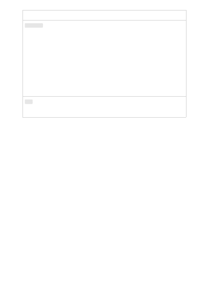

Parameter
Type
Required? Default Description
logit_bias
object
Optional
null
Modify the likelihood of specified tokens
appearing in the completion. Accepts a
json object that maps tokens (specified by
their token ID in the tokenizer) to an
associated bias value from -100 to 100.
Mathematically, the bias is added to the
logits generated by the model prior to
sampling. The exact effect will vary per
model, but values between -1 and 1
should decrease or increase likelihood of
selection; values like -100 or 100 should
result in a ban or exclusive selection of
the relevant token.
user
string
Optional
A unique identifier representing your
end-user, which can help Azure OpenAI
to monitor and detect abuse.
Azure OpenAI is deployed as a part of the Azure Cognitive Services. All Cognitive
Services rely on the same set of management APIs for creation, update and delete
operations. The management APIs are also used for deploying models within an OpenAI
resource.
Management APIs reference documentation
Learn about managing deployments, models, and fine-tuning with the REST API. Learn
more about the underlying models that power Azure OpenAI.
Management APIs
Next steps